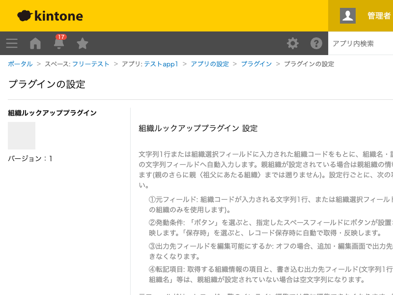

GovAppsプラグイン 安全性を確認できる無料kintoneプラグイン集
文字列1行または組織選択フィールドに入力された「組織コード」をもとに、組織名・説明・親組織の情報を 取得し、別の文字列フィールドへ自動入力するプラグインです。親組織が設定されている場合は親組織の 情報も1階層分だけ取得します(親のさらに親〈祖父にあたる組織〉までは遡りません)。設定したボタンを 押したとき、またはレコード保存時に反映できます。
申請フォームや台帳アプリなどで、担当部署の組織コードを文字列フィールドに入力するだけで、正式な組織名や説明文を別フィールドへ自動入力できます。組織名の表記ゆれを防ぎたい場合に活用できます。
組織選択フィールドで部署を選ぶと、その部署名だけでなく、直属の親組織(部の下の課であれば「部」)の名称も別フィールドへ自動入力できます。組織階層をまたいだ集計・絞り込み用の文字列フィールドとして活用できます(親のさらに親までは取得しません)。
元フィールドは、レコード一覧のインライン編集では常に編集できなくなります。該当する組織が見つからない場合(未入力を含む)、出力先フィールドはすべて空でクリアされます。親組織が設定されていない場合、親組織関連の項目も空になります。「ボタン押下時」の設定行では、反映ボタンの隣に「クリア」ボタンも表示され、確認ダイアログのあと元フィールド・転記済みの内容をまとめて空にできます。
kintoneセキュアコーディングガイドラインに沿って実装時にチェックしています。特に重要な点は次のとおりです。
kintone.api()(kintone自身への呼び出し専用の内部ラッパー)のみを使用しています。外部サーバーへの通信は一切行わず、外部ライブラリも使用していません。innerHTMLではなくtextContentやkintone標準のフィールド値レンダリングを経由しており、DOMへ構造として解釈されません。詳細な確認項目・確認日は下記GitHubのチェックリストに全項目を掲載しています。

このプラグインは、組織名・説明等の取得のためにOrganization API(GET /v1/organizations.json、
内部向けラッパーのkintone.api()経由)を実行します。「ボタン押下時」を選んだ設定行は
ボタンを押すたびに、「保存時」を選んだ設定行はレコード保存のたびに実行されます。組織自身に親組織
コードが設定されている場合は、親組織の取得のためにもう1回追加実行されます(最大2回。親のさらに親を
取得することはありません)。